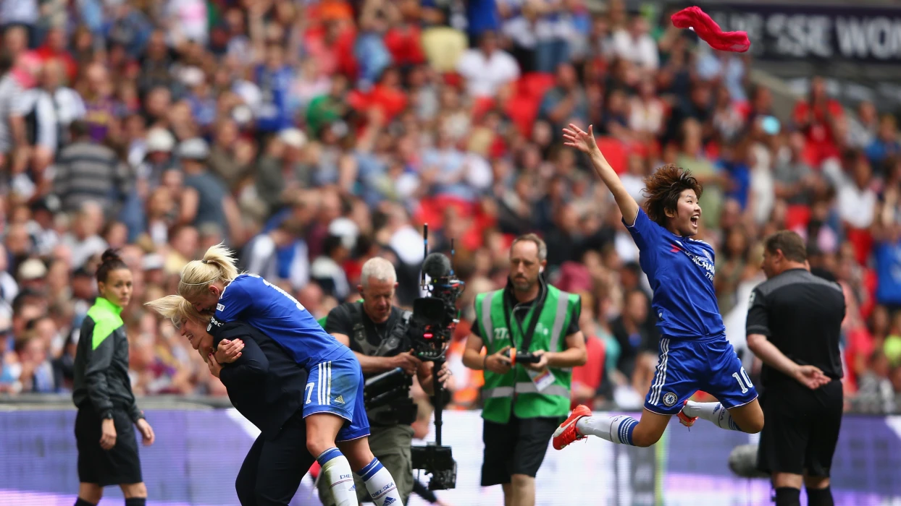
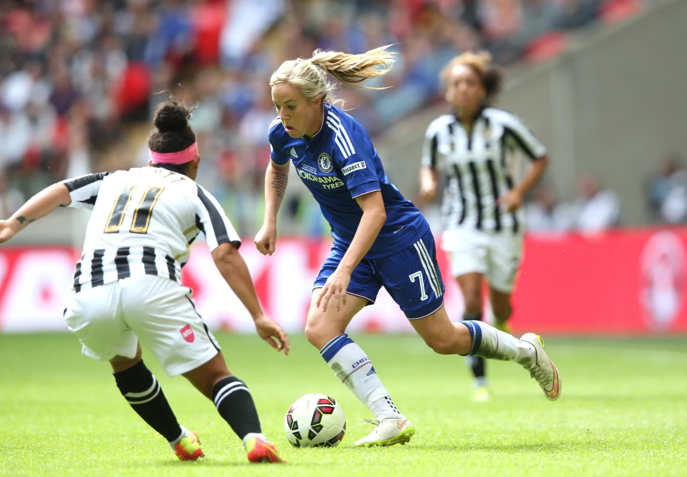
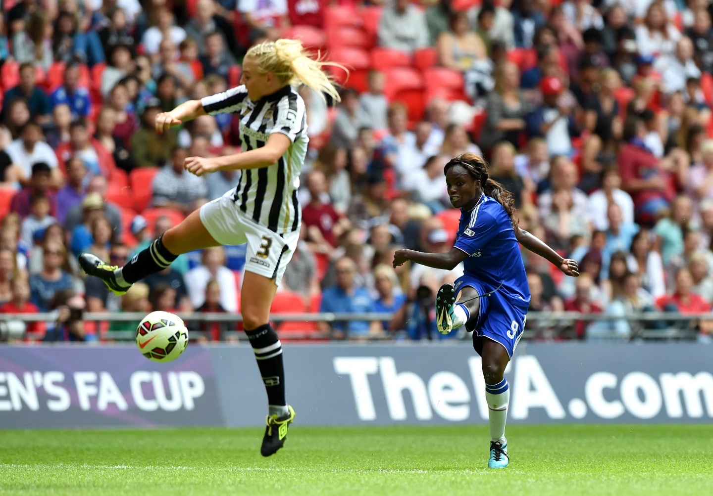

Chelsea Ladies secured the first major piece of silverware in the club's history with a historic 1-0 victory over Notts County in the FA Women’s Cup final at Wembley.เชลซี ทีมหญิงคว้าถ้วยรางวัลสำคัญชิ้นแรกในประวัติศาสตร์ของสโมสรด้วยชัยชนะเหนือน็อตต์สเคาน์ตี้ 1-0 ในรอบชิงชนะเลิศเอฟเอ วีเมนส์ คัพ ที่ เวมบลีย์
In front of over 30,000 supporters at the national stadium, Ji So-Yun’s goal settled the showpiece final, just as it had done in the semi-final win against Manchester City.ต่อหน้าผู้สนับสนุนมากกว่า 30,000 คนที่สนามกีฬาแห่งชาติ ประตูของจีโซ-ยุนสามารถตัดสินรอบชิงชนะเลิศได้ เช่นเดียวกับที่ทำในรอบรองชนะเลิศที่ชนะ แมนเชสเตอร์ ซิตี้
Emma Hayes named an unchanged starting team from the previous weekend’s action in the WSL 1, with captain Katie Chapman joining Drew Spence and Millie Bright in midfield. Hedvig Lindahl began in goal protected by a back four of Hannah Blundell, Niamh Fahey, Gilly Flaherty and Claire Rafferty.Emma Hayes ตั้งชื่อทีมออกสตาร์ทที่ไม่เปลี่ยนแปลงจากผลงานของสุดสัปดาห์ก่อนหน้าใน WSL 1 โดยมีกัปตัน Katie Chapman ร่วมกับ Drew Spence และ Millie Bright ในตำแหน่งกองกลาง Hedvig Lindahl ลงเป็นตัวจริงในตำแหน่งโกล โดยมีแบ็คโฟร์อย่าง Hannah Blundell, Niamh Fahey, Gilly Flaherty และ Claire Rafferty
Ji, scorer of the only goal in the semi-final, led the line up front supported by Gemma Davison and Eni Aluko.จี ผู้ทำประตูเดียวในรอบรองชนะเลิศ นำทีมในแนวหน้าโดยมีเจมม่า เดวิสัน และเอนิ อลูโกเป็นผู้สนับสนุน
Notts County started as the brighter of the two sides, but clear-cut chances were limited at both ends during the opening 20 minutes. The Blues were appealing for a penalty as Aluko’s header appeared to hit a hand in the box following a free-kick delivered by Ji, though referee Amy Fearn refused to answer their calls and waved play on.น็อตต์สเคาน์ตี้ออกสตาร์ทเป็นฝ่ายสว่างกว่าของทั้งสองทีม แต่โอกาสที่ชัดเจนถูกจำกัดทั้งสองด้านในช่วง 20 นาทีเปิดเกม เดอะบลูส์กำลังอุทธรณ์จุดโทษเนื่องจากลูกโหม่งของอลูโก้ดูเหมือนจะไปฟาดมือในกรอบเขตโทษหลังจากจีฟรีคิกเป็นผู้จ่ายให้ แม้ว่าผู้ตัดสินเอมี่ เฟียร์นจะปฏิเสธที่จะรับสายและโบกมือให้เล่นต่อไป
Having settled in the contest, Chelsea’s threat continued to grow and Fahey came close as she diverted another Ji free-kick over the bar, before Aluko’s pace down the left flank saw her fashion some space for a centre. However, with only Ji supporting in the box, her cross was cut out and the danger cleared.หลังจากตัดสินในการแข่งขันแล้ว ภัยคุกคามของ เชลซี ยังคงเพิ่มขึ้นอย่างต่อเนื่อง และ Fahey เข้ามาใกล้ในขณะที่เธอเปลี่ยนเส้นทางฟรีคิกของ Ji ข้ามคานอีกลูก ก่อนที่ Aluko จะก้าวลงมาทางปีกซ้ายเพื่อเห็นว่าเธอสร้างพื้นที่สำหรับตรงกลาง อย่างไรก็ตาม มีเพียง Ji เท่านั้นที่ช่วยสนับสนุนในกล่อง ไม้กางเขนของเธอก็ถูกตัดออกไปและอันตรายก็คลี่คลาย

Aluko’s speed again caused problems for the Magpies’ backline moments later as the England striker’s influence on the game continued to grow. She accelerated onto a forward pass from the busy Davison and nicked the ball beyond stranded County goalkeeper Carly Telford; however, with the angle narrowing, her effort rippled the side netting of an unguarded goal.ความเร็วของอลูโก้ทำให้เกิดปัญหากับแนวรับของเดอะแม็กพายส์อีกครั้งในเวลาต่อมา เนื่องจากอิทธิพลของกองหน้าทีมชาติอังกฤษรายนี้ในเกมยังคงเติบโตอย่างต่อเนื่อง เธอเร่งส่งบอลไปข้างหน้าจากเดวิสันที่พลุกพล่านและจ่ายบอลไปไกลกว่าผู้รักษาประตูเคาน์ตี้ที่ติดอยู่ คาร์ลีเทลฟอร์ด; อย่างไรก็ตาม ด้วยมุมที่แคบลง ความพยายามของเธอก็ทำให้ตาข่ายด้านข้างของประตูที่ไม่มีการระวังตัวกระเพื่อม
Yet the 28-year-old was intent on making the difference for her side and, after seeing a shot pushed away by Telford and then Davison fire inches wide of the far post following her dangerous inswinging cross from the left, Aluko was celebrating helping her side grab the opener.อย่างไรก็ตาม นักเตะวัย 28 ปีตั้งใจที่จะสร้างความแตกต่างให้กับทีมของเธอ และหลังจากที่เห็นลูกยิงที่เทลฟอร์ดผลักออกไป จากนั้นเดวิสันก็ยิงไปไกลหลายนิ้วจากเสาไกลตามการครอสที่อันตรายของเธอจากทางซ้าย อลูโกกำลังเฉลิมฉลองที่ช่วยให้ฝ่ายของเธอคว้าตัวเปิด
She once again skipped away from a couple of defenders down the left, advancing into the box and finding Ji. The South Korean’s first touch was slightly heavy, but she maintained her composure, following the ball into the goalmouth to bundle it in from close range for her third goal of the Cup campaign.เธอเป็นอีกครั้งที่กระโดดหนีจากกองหลังสองสามคนทางซ้าย เข้าไปในกรอบเขตโทษและพบจี การสัมผัสครั้งแรกของนักเตะชาวเกาหลีใต้นั้นหนักหน่วงเล็กน้อย แต่เธอยังคงรักษาความสงบ โดยตามบอลเข้าไปในปากประตูเพื่อรวมบอลจากระยะใกล้เพื่อทำประตูที่สามของแคมเปญคัพ
It was the final action of note in a half that had grown into an entertaining contest and left the second period finely poised.มันเป็นการกระทำครั้งสุดท้ายของโน้ตในช่วงครึ่งหลังที่กลายเป็นการแข่งขันที่สนุกสนานและปล่อยให้ช่วงที่สองอยู่ในสภาพที่ประณีต
Aluko had a great chance to extend the lead inside a minute of the restart, creeping into a dangerous position in the box but mistiming her connection to Davison’s teasing cross. Another quiet spell of few chances followed before County came close to levelling after an hour. Desiree Scott’s shot was deflected wide by a brave header from Flaherty, before Davison cleared Leanne Chrichton’s header off the line with Lindahl beaten.อลูโกมีโอกาสที่ดีในการขึ้นนำภายในหนึ่งนาทีของการรีสตาร์ท โดยคืบคลานเข้าสู่ตำแหน่งอันตรายในกรอบเขตโทษ แต่เข้าใจผิดคิดว่าการเชื่อมต่อของเธอกับการครอสหยอกล้อของเดวิสัน ช่วงเวลาอันเงียบสงบอีกครั้งหนึ่งตามมาก่อนที่เคาน์ตี้จะเข้าใกล้การปรับระดับหลังจากผ่านไปหนึ่งชั่วโมง ลูกยิงของเดซิรี สก็อตต์ถูกโหม่งอย่างกล้าหาญจากฟลาเฮอร์ตี ก่อนที่เดวิสันจะเคลียร์ลูกโหม่งของลีแอนน์ ไครชตันออกจากเส้นโดยที่ลินดาห์ลพ่ายแพ้
Telford was forced into more action down the other end, getting down low to push Aluko’s low drive behind, and then the former Chelsea goalkeeper did well to get her body behind Ji’s powerful effort from distance.เทลฟอร์ดถูกบังคับให้ลงมือมากขึ้นในอีกด้านหนึ่ง โดยถอยต่ำเพื่อดัน Aluko ขับไปข้างหลัง จากนั้นอดีตผู้รักษาประตู เชลซี ก็ทำได้ดีเพื่อให้ร่างกายของเธออยู่ด้านหลังความพยายามอันทรงพลังของ Ji จากระยะไกล

Flaherty, a five-time winner of the FA Women’s Cup coming into the game, came agonisingly close to making it 2-0 after 70 minutes. A deep corner from the right was turned back into the danger zone by Fahey and flicked towards goal instinctively by Aluko, yet Flaherty was unable to twist her body quickly enough to trouble Telford from a few yards out.ฟลาเฮอร์ตี ผู้ชนะเอฟเอ วีเมนส์ คัพ 5 สมัย เข้ามาในเกม เกือบจะทำให้ขึ้นนำ 2-0 หลังจากผ่านไป 70 นาทีอย่างเจ็บปวด มุมลึกจากทางขวาหันกลับเข้าสู่เขตอันตรายโดย Fahey และสะบัดเข้าหาประตูโดยสัญชาตญาณโดย Aluko แต่ Flaherty ก็ไม่สามารถบิดตัวของเธอเร็วพอที่จะสร้างปัญหาให้กับ Telford จากระยะไม่กี่หลา
The celebrations could begin at Wembley as Chelsea Ladies lifted the FA Women’s Cup.การเฉลิมฉลองอาจเริ่มต้นที่ เวมบลีย์ ในขณะที่ เชลซี ทีมหญิงชูถ้วย FA Women's Cup